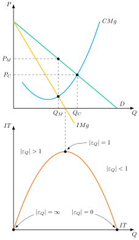
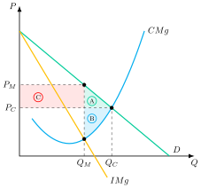
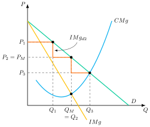
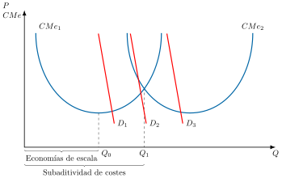
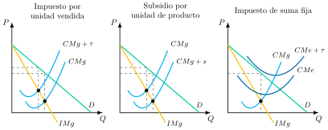
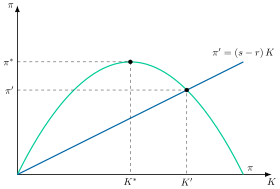

Apuntes para la oposición al Cuerpo de Diplomados Comerciales del Estado
8 Análisis de mercados (II). Teoría del monopolio. Discriminación de precios. Monopolio natural. Análisis de eficiencia y bienestar. La regulación del monopolio.
8.1 Introducción  1'
1'
¿Qué tienen en común Google y la empresa que suministra el agua en tu ciudad? En sentido estricto, ambas son monopolios, pero la teoría económica las trata de forma radicalmente distinta, dando lugar a diferente regulación.
Al agua se la regula precisamente porque es un monopolio necesario: se acepta un único proveedor por razones de eficiencia, pero se vigila que no abuse de esa posición. A Google, en cambio, se la persigue por lo contrario: no por ser eficiente tener un único buscador, sino por haber usado su posición dominante para bloquear la competencia allí donde sí sería posible. Así se explican el proceso antimonopolio contra Google en Estados Unidos —iniciado en 2020 y resuelto en 2024, con sentencia que declaró ilegal esa posición de monopolio— y la Digital Markets Act europea, plenamente aplicable desde marzo de 2024.
Este segundo tipo de poder de mercado no solo preocupa por su efecto sobre los precios: como muestra Autor et al. (2020), la creciente concentración de mercado en manos de estas empresas explica en buena medida la caída del porcentaje del PIB destinado a la remuneración del trabajo, al desplazar la actividad hacia empresas con márgenes muy superiores al coste marginal y con una participación del trabajo en sus ingresos mucho menor. El poder de mercado, por tanto, no solo distorsiona los precios: también condiciona cómo se reparte la renta entre capital y trabajo.
Por ello, el objetivo de esta exposición será el análisis del monopolio, el impacto en el bienestar y su regulación a través del siguiente esquema:
Caracterización del monopolio.
Equilibrio del mercado.
Tipos de monopolio.
Regulación y control.
8.2 Caracterización del monopolio 30"
Comenzando con la caracterización, la estructura de monopolio se basa en1
Un único oferente2 que, con un comportamiento racional, elige el precio o la cantidad que maximiza su beneficio, sabiendo que la demanda determinará la otra variable. Además, la demanda a la que se enfrenta la empresa es la propia demanda de mercado.
Producto homogéneo y ausencia de sustitutivos cercanos (lo que determina su poder de mercado y con frecuencia, su ineficiencia y necesidad de regulación).
Barreras de entrada y salida en la industria, lo que posibilita beneficios extraordinarios.
Numerosos compradores con una demanda lineal –lineal para simplificar el análisis–.
Competencia perfecta en el mercado de factores.
No existirán bienes públicos ni externalidades3.
Como consecuencia de lo anterior, el monopolista tendrá poder de mercado, es decir, capacidad para fijar un precio superior a su coste marginal, porque se enfrenta a una curva de demanda con pendiente negativa y no perfectamente elástica4.
8.3 Equilibrio del mercado 7'30"
No obstante, el monopolista no fijará cualquier precio, sino aquel precio que maximice sus beneficios que es la diferencia entre los ingresos totales, \(P\left(Q\right)\cdot Q\), y los costes, \(C\left(Q\right)\), donde \(P\left(Q\right)\) es la curva de demanda con pendiente negativa –elasticidad de la demanda finita– y el precio es una variable endógena –mientras que en competencia perfecta era exógena–: \[\max\quad\pi=P\left(Q\right)\cdot Q-C\left(Q\right) \tag{8.1}\]
Las CPO del problema establecen que el ingreso marginal es igual al coste marginal \[\dfrac{\partial\pi}{\partial Q}=0\Rightarrow IMg=CMg \tag{8.2}\] donde el ingreso marginal, es decir, la variación del ingreso total al vender una unidad más, es inferior al precio, que coincide con la demanda y con el ingreso medio \[IMg=P\left(1-\dfrac{1}{\left|\varepsilon_{Q}\right|}\right)<P=D=IMe,\qquad\varepsilon_{Q}\neq\infty \tag{8.3}\] Para vender una unidad más, la empresa debe bajar el precio: gana el precio de esa unidad adicional (efecto positivo), pero pierde la rebaja aplicada a todas las que ya vendía (efecto negativo), de ahí que el ingreso marginal quede por debajo del precio5. Por su parte, si el \(IMg\), fuera menor que el \(CMg\), la empresa reduciría la producción, y viceversa.
Diferencia respecto a Competencia perfecta
En competencia perfecta también se cumple que \(IMg=CMg\), pero el \(IMg\) es igual al precio, mientras que en un monopolio el \(IMg\) es menor que el precio. Esto implica que:
La valoración privada del bien, \(IMg\), –realizada por el monopolista– es menor que la valoración social de dicho bien, \(P\) o \(D\), –realizada por el mercado–. En consecuencia, el monopolista valorará menos que la sociedad el bien y producirá una cantidad inferior a la óptima desde el punto de vista del mercado.
En competencia perfecta, el productor debe hacer frente a una demanda perfectamente elástica (es decir, un aumento infinitesimal del precio le hace perder todas sus ventas), por lo que \(|\varepsilon_{Q,P}|=\infty\), lo que en la fórmula ( 8.3) antes vista permite que \(IMg=P\)6.
Índice de Lerner
Reorganizando la CPO se obtiene el índice de Lerner, \(IL\), (Lerner 1934), que mide el poder de mercado como la parte del precio que excede al coste marginal. En el óptimo del monopolista, ese margen es igual a la inversa del valor absoluto de la elasticidad-precio de la demanda \[IL=\dfrac{P-CMg}{P}=\dfrac{1}{\left|\varepsilon_{Q}\right|},\quad IL\in\left(0,1\right) \tag{8.4}\] siendo necesario que la elasticidad sea mayor que uno ya que en caso contrario el ingreso marginal sería negativo no pudiéndose igualar a los costes marginales que siempre son positivos7. Por ende, el precio depende positivamente del coste marginal y negativamente de la elasticidad demanda-precio.
A su vez, la CSO, que debe cumplirse para que el beneficio obtenido sea un máximo y no un mínimo, establece que la pendiente del ingreso marginal es menor que la del coste marginal \[\dfrac{\partial^{2}\pi}{\partial^{2}Q}=0\Rightarrow\dfrac{\partial IMg}{\partial Q}<\dfrac{\partial CMg}{\partial Q} \tag{8.5}\] por lo que el monopolista puede maximizar tanto en el tramo creciente de los costes marginales –como exigía la CSO en competencia perfecta–, como en el tramo decreciente –siempre y cuando, en este caso sea más plana que la curva del ingreso marginal–.
Gráficamente, en un plano de precios y cantidades como el de la Figura 8.1:
Se representa la curva de demanda a la que se enfrenta un monopolista, \(D\), su respectiva curva de ingreso marginal, \(IMg\), y la curva de coste marginal, \(CMg\).
El monopolista fijará un precio, \(P_{M}\), donde el coste marginal se iguale al ingreso marginal, dando lugar a una cantidad \(Q_{M}\). En competencia perfecta, donde el coste marginal se iguala a la demanda, el precio es menor, \(P_{C}\), y la cantidad producida mayor, \(Q_{C}\).
En un plano adyacente de ingresos y cantidades se representa la curva de ingresos totales, que nacerá en el origen y alcanzará el máximo cuando el \(IMg\) es nulo, es decir, cuando la elasticidad sea igual a 1. Se verifica así que el monopolista produce en el tramo elástico de la demanda.

Finalmente, la asociación única que existe en competencia perfecta entre precios y cantidades no se da en el monopolio, ya que en éste el precio es una variable endógena para el monopolista. Así, no hay una curva de oferta propiamente dicha. El precio y la cantidad no solo dependerán de la tecnología, sino también de la demanda (a menor elasticidad, mayor precio). Es decir, no existirá una relación unívoca entre precio y cantidad.
Por consiguiente, la consecuencia de la inexistencia de una curva de oferta del monopolista será que no se podrán hacer ejercicios de estática comparativa con validez general (el monopolista es esclavo de su demanda).
Equilibrio a corto plazo
En cuanto al análisis en diferentes horizontes temporales, el corto plazo se define como el horizonte temporal en el que la dotación de al menos un factor productivo –normalmente capital– es fija.
La condición de viabilidad económica en el corto plazo es que el nivel de precios cubra los costes variables \[P=IMe\geq \text{M{í}n}\,CVme\] es decir, puede obtener pérdidas pero solo si son menores que los costes fijos.
Por ello, el monopolista tendrá beneficios o pérdidas en función de donde se sitúe la curva de \(CMe\) con respecto al precio.
Equilibrio a largo plazo
Por otro lado, el largo plazo se define como aquel horizonte temporal en el que la dotación de todos los factores productivos es variable.
La condición de viabilidad económica en el largo plazo es que el nivel de precios cubra los costes medios \[P\geq \text{M{í}n}\,CMe\] es decir, que en el largo plazo el monopolista solo producirá si cubre todos los costes, similitud que comparte con la competencia perfecta.
Monopolio vs Competencia Perfecta
No obstante presenta una serie de diferencias con la competencia perfecta:
El monopolista podría obtener ganancias, ya que las barreras de entrada impiden el acceso de nuevas empresas al mercado.
La maximización de beneficios no la realiza el monopolista necesariamente en el mínimo de la curva de costes medios.
Barreras de entrada
A largo plazo existe monopolio si existen barreras a la entrada de nuevos competidores. Estas a su vez pueden ser:
Técnicas: Por conocimiento específico de una técnica productiva de bajo coste; o \(CMg\) y \(CMe\) decrecientes para un gran intervalo de niveles de producción.
Legales por razones de legislación de patentes, potenciar la innovación o por interés nacional.
Estratégicas: obstáculos que las empresas instaladas levantan deliberadamente para reducir o eliminar la probabilidad de entrada. Se distinguen de las barreras “inocentes”, que surgen como efecto secundario, no buscado, de la propia maximización del beneficio.
Eficiencia del equilibrio del monopolio
Por otro lado, el equilibrio bajo monopolio es ineficiente bajo varios puntos de vista.
Ineficiencia asignativa
Desde un punto de vista asignativo, el monopolio es ineficiente respecto a la situación de competencia perfecta pues se produce menor cantidad a mayor precio. Es decir, no se maximiza el excedente total (excedente del consumidor + excedente del productor).
Gráficamente como se observa en la Figura 8.2, la ineficiencia corresponde a las áreas \(A\) y \(B\) que es el denominado triángulo de Harberger (Harberger 1954)8.

La ineficiencia implica que se podría aumentar el bienestar de algunos agentes del mercado sin reducir el de los demás. Esto se debe a que hay una gama de unidades no producidas para las cuales los consumidores estarían dispuestos a pagar un precio superior al coste de su producción.
El origen de esta ineficiencia se encuentra en que para producir y vender una unidad más el monopolista debería bajar el precio de todas las unidades vendidas, no solo la de la última.
Ineficiencia de factores productivos
Por otro lado, una producción menor que la de competencia perfecta implica una menor demanda de factores productivos –lo que podría generar desempleo–. Además, el monopolista retribuirá menos a los factores productivos, ya que estos se retribuyen según el ingreso del producto marginal –\(IMg\cdot PMg\)– y en monopolio este es inferior al valor de la productividad marginal –\(P\cdot PMg\)– ya que \(IMg<P\). Por lo tanto se emplearán menos factores productivos y se retribuirán menos.
Ineficiencia X de Leibenstein
A su vez, la ausencia de competencia reduce los incentivos del monopolista a reducir sus costes, produciéndose la ineficiencia X de Leibenstein (Leibenstein 1966). Además, la existencia del monopolio favorece las actividades de búsquedas de rentas, para mantener la posición de monopolio mediante la creación de barreras de entrada.
¿Regular o no regular?
Sin embargo, hay que señalar que la mera presencia de estas ineficiencias no es suficiente para requerir una intervención o regulación de los poderes públicos. En algunos casos, se permiten los monopolios como veremos: Patentes o utilities (o monopolio natural).
En este caso habría que ponderar la eficiencia asignativa frente a la eficiencia productiva y la eficiencia dinámica9. Por tanto, la idea básica es que la ineficiencia del monopolio en sentido asignativo por sí sola no lo descalifica. Esto será materia de la política de Defensa de la Competencia y como veremos después lleva a la teoría de la Regulación y Control en monopolio. Además, a los fallos de mercado se contraponen los fallos del sector público y de la regulación.
Por consiguiente, de cara a regular el monopolio y determinar la política óptima, es fundamental considerar y estudiar de qué tipo de monopolio se trata y de dónde procede su fuente de poder de mercado.
8.4 Tipos de monopolio 4'
Como se acaba de señalar, normalmente el monopolio genera una ineficiencia respecto a la situación de competencia perfecta. No obstante, se pueden dar escenarios donde:
El monopolio no genere ineficiencias –por ejemplo, el monopolio discriminador de primer grado– pero no tenga en cuenta consideraciones de reparto de la renta (reparto del excedente social).
El monopolio genere una ineficiencia asignativa pero asegure la eficiencia productiva –por ejemplo, el monopolio natural–.
De esta forma, la existencia de un monopolio no justifica su desmantelamiento en sí mismo, sino que dependerá del tipo concreto de monopolio.
Monopolio discriminador
Comenzando con el monopolio discriminador, es aquel en el que el monopolista no establece un único precio, sino que cobra precios distintos en función del consumidor o de las unidades vendidas, con el objetivo de aumentar sus beneficios respecto a la situación de precio uniforme. Así, separando los mercados podrá aumentar sus beneficios10.
Para que se dé la discriminación se requiere que
El monopolista pueda distinguir a consumidores o grupos con distinta disposición a pagar (en la discriminación de tercer grado, con distinta elasticidad-precio de la demanda).
No exista posibilidad de arbitraje, es decir, de reventa entre consumidores con distinta disposición a pagar.
Según la clasificación ofrecida por Pigou (1920), se distinguen tres tipos de discriminación de precios.
Discriminación de primer grado o perfecta
El monopolista observa perfectamente la valoración de cada consumidor. Cada unidad se vende al consumidor que más la valora, al precio máximo que estaría dispuesto a pagar. Por lo tanto, hay tantos precios como consumidores.
Hay pocos ejemplos en el mundo real, pero pueden citarse los zocos o el médico de un pueblo. No obstante, la tarificación dinámica mediante la utilización de algoritmos y datos para segmentar el mercado de manera muy granular, se acerca a este tipo de discriminación11.
En este caso el ingreso marginal se iguala a la demanda, \(IMg=D\), por lo que el monopolista producirá hasta que la última unidad se venda a un precio igual al \(CMg\) y se apropiará de todo el excedente del consumidor. Es decir, el excedente del consumidor será nulo, y el monopolista se apropiará de todo el excedente.
El resultado es eficiente en el sentido de Pareto, por lo que la intervención estatal no está justificada por motivos de eficiencia, aunque sí por motivos de equidad.
Gráficamente, la curva de \(IMe\) iría por encima de la curva de demanda, \(D\), es decir, de \(IMg\), ya que en el ingreso medio se tiene en cuenta, no solo la última unidad vendida, sino también todas las anteriores (que se vendieron a un mayor precio)12. Por lo tanto, \(IMg=D<IMe\).
Discriminación de segundo grado o fijación no lineal de precios
La discriminación de precios de segundo grado consiste en cobrar un precio por unidad que depende de la cantidad comprada, por lo que también se denomina fijación no lineal de precios. Todos los consumidores se enfrentan al mismo menú de precios, de modo que quienes compran la misma cantidad pagan lo mismo13.
Gráficamente, como se observa en la Figura 8.3, se considera la posibilidad de establecer 3 precios diferentes, \(P_{1}\), \(P_{2}\) y \(P_{3}\). La curva de ingreso marginal asociada, \(IMg_{d2}\), tendría forma escalonada dado que en cada tramo de producción al mantener el precio constante el ingreso marginal es el mismo. El monopolista, al buscar la maximización del beneficio, establecerá el nivel de producción máximo aquel donde el ingreso marginal es igual al coste marginal, es decir, \(Q_{3}\).
Ahora el excedente del consumidor respecto a la situación de monopolio convencional es menor, ampliando el excedente en manos del monopolista. Por lo tanto, si el monopolista practica este tipo de discriminación de precios perjudica a los consumidores, se beneficia ampliando su excedente y se incrementa la cantidad transaccionada en el mercado14.

Ejemplos15:
Descuentos por grandes cantidades, que hacen que el precio unitario sea menor que cuando se compran cantidades más pequeñas .
Tarifas en dos partes, que hacen que el precio unitario sea menor cuanto mayor es la cantidad comprada.
Discriminación de tercer grado
El monopolista es capaz de observar características de los consumidores a partir de los cuales puede inferir información en cuanto a su valoración, permitiéndole discriminar entre cada segmento de mercado, tratándolos como mercados independientes.
La discriminación de precios de tercer grado significa que el monopolista vende a cada persona (o grupo de personas) el bien a precios distintos, pero cobra el mismo precio por todas las unidades del bien que vende a esta persona. En otros términos, hablaríamos de una única planta –un único \(CMg\)– y varias demandas –varios \(IMg\)–.
A su vez, es aplicable la regla simple de la elasticidad inversa analizada en el caso del monopolio, según la cual se cargarán en todos los mercados precios superiores a los costes marginales y tanto mayores cuanto menor sea la elasticidad de la demanda de cada mercado16.
Como ejemplo, abonos de transporte con precios más bajos para la tercera edad17. Se cobra un precio diferente a cada grupo, pero un mismo precio dentro del grupo.
Otro ejemplo serían los cupones: Permiten a las empresas segmentar el mercado entre clientes sensibles al precio (demanda elástica) que usan los cupones, y clientes menos sensibles (demanda inelástica) que pagan el precio completo, maximizando así los beneficios18.
Monopolio natural
Por otro lado, existe monopolio natural cuando una sola empresa puede abastecer toda la demanda del mercado a un coste menor que cualquier reparto de esa producción entre varias empresas, es decir, cuando hay subaditividad de costes19 \[C\left(Q\right)<\sum\limits_{i=1}^{n}C\left(q_{i}\right),\quad Q=\sum\limits_{i=1}^{n}q_{i} \tag{8.6}\] pero las economías de escala son una condición suficiente pero no necesaria para que exista un monopolio natural.
Gráficamente, en un plano de precios, costes medios y cantidades como el de la Figura 8.4:
Se representa la curva de costes medios derivada de la concentración de la producción en una empresa, \(CMe_{1}\), y la correspondiente a dos empresas que se reparten la producción total a medias, \(CMe_{2}\).
En el gráfico vemos cómo en el tramo decreciente de la curva de coste medio para una empresa existe subaditividad de costes. Pero la subaditividad se extiende hasta \(Q_{1}\) a pesar de que existe un tramo con deseconomías de escala. En efecto, aunque en el tramo que va desde \(Q_{0}\) hasta \(Q_{1}\) existen deseconomías de escala, el coste medio de concentrar la producción en una empresa es menor que el de repartirla en dos empresas.
A partir de \(Q_{1}\) ya no existe subaditividad de costes y, por lo tanto, no hay monopolio natural.
De esta manera, el monopolio natural será deseable si la demanda corta a la curva de \(CMe_{1}\) en algún punto hasta \(Q_{1}\). Más allá, el monopolio natural no será deseable, pues el reparto de la producción entre más empresas generan menores costes.

En general, los mercados monopolísticos naturales surgirán cuando el tamaño mínimo eficiente sea grande en relación con la demanda del mercado. Esto explica en parte por qué antes había muchos monopolios naturales y ahora hay menos: conforme aumenta la demanda de productos (por ejemplo, por la apertura al comercio internacional), el tamaño mínimo eficiente se hace menor en relación a la demanda de mercado.
Sostenibilidad
Por otro lado, su sostenibilidad va a depender de dónde se sitúe la demanda:
Si la demanda se sitúa en algún punto anterior a \(Q_{0}\), el monopolio natural será deseable y sostenible, pues un outsider no podrá entrar ya que, para entrar, tendría que colocar un precio por debajo del precio del incumbente, y eso, para el tramo decreciente de \(CMe_{1}\), es sinónimo de \(P<CMe_{1}\), por lo que obtendría pérdidas.
Si la demanda se sitúa entre \(Q_{0}\) y \(Q_{1}\), el monopolio natural será deseable, pero su sostenibilidad dependerá de si la demanda se sitúa o no por debajo de la curva \(CMe_{2}\)20.
Esta lógica de sostenibilidad enlaza con la teoría de los mercados atacables o contestables (contestable markets), desarrollada por Baumol (Baumol 1982): bajo los supuestos anteriores, la mera amenaza de entrada disciplina al monopolista, que se ve obligado a fijar un precio igual al coste medio y a renunciar a los beneficios extraordinarios, incluso sin regulación explícita.
Junto a estos dos escenarios de eficiencia y equidad, conviene considerar también cómo cambia el análisis cuando el monopolista opera con una estructura de producción o de mercado distinta a la estándar de una única planta y un único producto frente a un único comprador.
Otros tipos de monopolio
Otros tipos de monopolio serían:
Monopolio multiplanta: se trata de la producción de un mismo producto en varias plantas con estructuras de costes diferentes21.
Monopolio multiproducto: la solución dependerá de la relación que exista entre las demandas de los bienes producidos por el monopolista, y también de la relación que haya entre los costes de producción.
Monopolio bilateral: o monopolista vs monopsonista, donde existe un único vendedor y un único comprador (por ejemplo, un trabajador de cualidades únicas y una única empresa que puede necesitar sus conocimientos). En este caso el resultado está indeterminado: solo puede acotarse un intervalo de precios y cantidades, y el punto final depende del poder negociador de cada parte, por lo que se estudia con la teoría de juegos22.
8.5 Regulación y control 6'
Por último, se va a analizar el aspecto de regulación y control de los monopolios, ya que la asignación generada es ineficiente. La regulación tiene como objeto evitar esas distorsiones y maximizar el bienestar, entendido como la suma del excedente del consumidor y el excedente del productor. Se va a diferenciar entre regulación fiscal, de precios y otros instrumentos23.
Regulación fiscal
Comenzando con la regulación fiscal, se pueden establecer 3 medidas:
Impuesto por unidad vendida: como el monopolio tiene poder de mercado podría trasladar el impuesto a los precios aumentando estos y disminuyendo la producción. Gráficamente, se trasladaría la curva de costes marginales, \(CMg+\tau\), estableciendo un precio mayor.
Subsidio por unidad de producto, lo que trasladaría gráficamente la curva de costes marginales hacia la derecha. Se transfiere renta al monopolista, la cual podría recuperarse técnicamente mediante un impuesto de suma fija. Sin embargo, es una medida más difícil de justificar aunque podría conseguirse un aumento de las cantidades producidas y la disminución de los precios.
Impuesto de suma fija, con el que solo variarían los costes medios por lo que la cantidad y el precio de equilibrio no cambian. El gobierno podría con este impuesto disminuir o controlar las ganancias del monopolio sin afectar al precio o a la producción.
Sin embargo, en general la regulación fiscal no es efectiva ya que se reducen los beneficios pero no se alcanza una asignación de competencia perfecta.

Regulación de precios
Por otro lado, otro conjunto de técnicas son las que tienen que ver con la regulación de precios:
Óptimos de primer orden, que tratan de restablecer la eficiencia asignativa.
Óptimos de segundo orden, que buscan el máximo bienestar posible con la condición de que la empresa cubra sus costes.
Óptimos de tercer orden, tratan de limitar los beneficios extraordinarios.
Óptimo de primer orden
El regulador dispone de toda la información disponible acerca de los costes. Su objetivo es, como decíamos, restablecer la eficiencia asignativa (tratando de lograr una solución first best) (es decir, imponer \(P=CMg\)), y cubrir pérdidas o eliminar beneficios extraordinarios:
Si la condición competitiva se produce en el tramo decreciente de los costes medios, \(CMe>CMg=P\), por lo que se producirán pérdidas. Para cubrir estas pérdidas el gobierno puede otorgar una subvención.
Si la condición competitiva se produce en el tramo creciente de los costes medios, \(CMe<CMg=P\) , por lo que se producirán beneficios. Para eliminar estos beneficios el gobierno puede exigir un impuesto de suma fija por el valor del área sombreada y luego repartirlo entre los consumidores (sin embargo, esta solución lleva asociada una elevada complejidad práctica e incentiva a que el monopolista no revele sus costes verdaderos).
El problema de esta solución de primer orden es que, si se produce en el tramo decreciente de los costes medios (que es lo más común), es necesario recaudar vía impuestos24 la cuantía de la subvención a otorgar al monopolista, lo que puede producir una distorsión que genere ineficiencia.
Por eso se suelen aplicar solución de segundo orden (óptimos de solución Second-Best).
Óptimo de segundo orden
El óptimo de segundo orden busca el mayor bienestar social compatible con que el monopolista cubra sus costes, lo que suele implicar eliminar sus beneficios extraordinarios. Existen diferentes métodos: criterio del coste medio, tarifas con restricciones de capacidad, la tarifa en 2 partes, en el caso del monopolio multiproducto la regla de la elasticidad inversa o precios de Ramsey, y el mecanismo de Loeb y Magat.
Criterio del coste medio
El Gobierno impone \(P=CMe\), asegurando beneficios nulos al monopolista. El problema es que la eficiencia puede resentirse, ya que la garantía de que los precios se revisarán para cubrir costes anula el incentivo de las empresas a reducirlos. Se produce un trade-off eficiencia-rentabilidad.
Precio según utilización de capacidad: demandas pico-valle
Algunas actividades se caracterizan por estar sujetas su demanda a fluctuaciones sistemáticas. Esto afecta principalmente a empresas de servicios públicos, como la provisión de energía eléctrica, agua, transporte público, llamadas telefónicas, donde hay momentos del día en que la demanda aumenta considerablemente –demanda pico– en relación a otros momentos –demanda valle–. También afecta a otros bienes de provisión privada, como la demanda turística o los taxis.
Las características principales de estos sectores son:
La demanda es estacional u horaria.
El output no es almacenable, por lo que no se puede trasladar los bienes y servicios de un momento a otro, por lo que no es posible un arbitraje temporal.
Todas las fases de la demanda son atendidas con una misma capacidad, por lo que la capacidad existente no se utiliza de manera uniforme, es decir, es un caso de producción conjunta. Por tanto, Para satisfacer la demanda en los períodos pico se necesitan inversiones con un largo período de maduración que imponen un exceso de capacidad instalada en los períodos valle.
La regulación óptima en estos casos pasa por25:
Cobrar Tarifa, \(T=CMg\cdot q\) en los momentos valle. Por tanto, se cubren los costes de uso.
Cobrar Tarifa \(T=CF/n+CMg\cdot q\) en los momentos pico, donde \(n\) es el número de consumidores. Por tanto, se cubre el coste de financiar la capacidad instalada y se cubren los costes de uso.
Es decir, se asegura que el beneficio del monopolista va a ser cero haciendo que los costes fijos sean soportados por los consumidores que consumen en períodos de demanda pico, mientras que los consumidores que consumen en períodos de demanda valle deben soportar exclusivamente los costes variables26.
Tarifa en dos partes
Consiste en asegurar el nivel de producción competitivo (es decir, eficiente) al tiempo que se asegura un beneficio normal –beneficio nulo–27.
Así, para configurar la tarifa, \(T\), se establece una cuota fija por el derecho a consumir los servicios del monopolista natural (la cuota de enganche, por ejemplo la de conexión telefónica o eléctrica), por un importe \(A\), y un precio constante por unidad consumida, \(p\), de modo que el pago variable es \(p\cdot q\), de forma que la función de pagos del consumidor sería \[T=A+p\cdot q \tag{8.7}\] donde, \(A\) serían los costes fijos a los que tiene que hacer frente el monopolista para atender la demanda, y se distribuirían uniformemente entre los consumidores, \(A=CF/n\) y el precio variable por unidad se representará mediante los costes marginales \(p=CMg\).
Problemas
La tarifa en dos partes, sin embargo, tiene 3 problemas:
Demanda constante: supone que la demanda es constante e independiente de la cuantía que tome la parte fija de la tarifa, supuesto no realista, ya que es previsible que sí exista cierta sensibilidad de la demanda ante variaciones en la cuota fija.
Regresividad: podría dar lugar a desigualdad, ya que los consumidores de menores ingresos podrían quedar expulsados completamente del mercado. Una posible solución a este punto podría ser no fijar la cuota entre el número de consumidores, sino que la cuota sea diferente para los consumidores en función de la renta: los consumidores con rentas más bajas pagarían cuotas más bajas, que se verían compensadas con las mayores cuotas del resto de consumidores.
Maximización de eficiencia: Podría no estar maximizándose la eficiencia, ya que se está aplicando la tarifa de manera uniforme o en función de la renta de los consumidores, pero no en función de la elasticidad. La eficiencia sería mayor si la cuota fija fuese mayor para los consumidores de demanda inelástica y menor para los de demanda elástica.
No obstante, al igual que la cuota fija uniforme, podría ocasionar problemas de equidad si los de demanda inelástica son los más pobres –por ejemplo, porque se trata de un bien de primera necesidad–. Sería una solución similar a la de la Regla de Ramsey del monopolio multiproducto.
Precios de Ramsey
Por otro lado, si el monopolio es multiproducto la regulación puede adaptar la regla de elasticidad inversa o precios de Ramsey. Esta regla es un óptimo de segundo orden ya que se trata de cubrir los costes de la empresa, \(CMe>CMg\).
Para ello, reparte el coste fijo mediante un margen sobre el coste marginal inversamente proporcional a la elasticidad-precio de cada demanda, de modo que los productos con una demanda más rígida soportan un margen mayor. Ese margen es tanto mayor cuanto más costoso resulte, en términos de bienestar, cumplir la restricción de beneficio, recogida en el multiplicador \(\lambda\)2829: \[\dfrac{P-CMg}{P}=\dfrac{\lambda}{1+\lambda}\cdot\dfrac{1}{\left|\varepsilon\right|} \tag{8.8}\]
De esta forma, el nivel de bienestar es mayor al que se obtendría si los costes fijos se repartieran por igual entre todos los consumidores.
Sin embargo, los principales inconvenientes son:
Puede generar desigualdad pues los productos con baja elasticidad precio suelen tener un peso mayor en los individuos con poca renta.
Exige conocer los costes y la demanda de todos los bienes, por lo que su aplicación se limita a la determinación de los precios en las empresas públicas.
No son precios necesariamente libres de subsidios cruzados –es decir, la producción del bien 1 genera pérdidas, pero se mantiene porque recibe un ‘subsidio’ procedente del bien 2–, por lo que pueden dar lugar a una configuración del mercado no sostenible30.
Su implementación práctica tendería a ir acompañada por otras medidas, por ejemplo, de política fiscal.
Mecanismo de Loeb y Magat (Loeb y Magat 1979)31
El regulador permite al monopolista fijar el precio que desee, comprometiéndose a entregarle un subsidio equivalente a todo el excedente del consumidor que genere dicho precio. De esta forma:
Ventaja: el monopolista tendrá incentivos a fijar un precio igual al coste marginal y producir la cantidad de competencia perfecta para maximizar el excedente del consumidor y, por tanto, sus beneficios.
Desventajas: i) requiere que el regulador conozca con precisión la demanda para fijar la cuantía del subsidio; y ii) implica una redistribución a favor del monopolista difícil de justificar políticamente.
Óptimo de tercer orden
Por último, existe un último tipo de regulación que es el óptimo de tercer orden. Así, si la información no es completa para restablecer la eficiencia el regulador intentará al menos limitar los beneficios extraordinarios.
Regulación de la tasa de beneficios
Para ello se puede limitar la tasa de beneficios derivada de la rentabilidad del capital invertido. Este método tiene
Ventaja: fácil observabilidad de los datos de beneficios (al menos en sentido contable) y del capital invertido.
Desventaja: pueden conducir a una ineficiencia por una sobrecapitalización o efecto Averch-Johnson (Averch y Johnson 1962). Por lo tanto, una empresa sometida a este tipo de regulación elegirá una combinación de capital y trabajo ineficiente, lo que se traducirá en mayores costes y, por ende, en precios más elevados.
Analíticamente, \[\max\quad\pi=IT-w\cdot L-r\cdot K \tag{8.9}\] sujeto a la tasa de rendimiento permitida. \[\dfrac{IT-w\cdot L}{K}=r\leq s \tag{8.10}\]
Si la tasa de rendimiento permitida es superior al coste del capital (lo cual es plausible pues si no, no se invertiría nada), \(\pi=\left(s-r\right)K>0\)32, implica que los beneficios se incrementarán aumentando \(K\), lo que le llevará a una sobrecapitalización.
Gráficamente, en un plano de beneficios y capital como el de la Figura 8.6 se representa la curva de evolución de los beneficios, \(\pi,\) en función del capital y una línea recta que muestra la restricción del regulador, es decir, los máximos beneficios permitidos para cada unidad de capital. Todos los puntos en la recta o por debajo de ella serán aceptables por los reguladores, ya que se cumplirá la restricción
Si la empresa maximizara beneficios elegiría un nivel de capital \(K^{*}\). Sin embargo, dada la restricción estos no son alcanzables pues exceden a los permitidos por lo que elegirá el nivel \(K^{\prime}\) con unos beneficios \(\pi^{\prime}\).

Sin embargo, todos los sistemas de fijación de precios vistos hasta ahora presentan los siguientes problemas:
Problemas de información: el regulador requiere un conocimiento relativamente preciso de las funciones de coste, de las funciones de demanda, de las preferencias sociales, etc.
Problemas de incentivos: si el regulador utiliza la información de costes que le proporcionan las empresas, éstas tendrán incentivos a comunicarle costes superiores a los reales y a no esforzarse en rebajar los costes.
En consecuencia, en ocasiones es preferible introducir cierta flexibilidad, generando incentivos para que las empresas actúen de forma eficiente, que serán las soluciones que veremos a continuación.
Menú de contratos: Modelo de Laffont y Tirole (1986)
Consiste en un modelo que endogeniza la función de costes basándose en la teoría de la agencia, donde el gobierno es el principal y el empresario el agente.
Parte del supuesto de que el gobierno, que busca maximizar el excedente social, obtiene un bien público de la empresa privada que financia a través de una transferencia, \(TR\). El regulador puede observar los costes, \(C\), que ha generado la empresa durante el periodo pasado pero ignora el esfuerzo necesario para reducirlos, siendo dicho esfuerzo completamente conocido por la empresa. Así, la empresa, al iniciar cada periodo, anunciará su previsión de costes, \(C^{a}\).
Laffont y Tirole (Laffont y Tirole 1986) proponen que el regulador ofrezca a la empresa una transferencia de la forma \[TR=a+b\cdot\left(C-C^{a}\right) \tag{8.11}\] donde \(a\) es un pago fijo garantizado con independencia del resultado, y \(b\) es la proporción de la desviación entre el coste real, \(C\), y el anunciado, \(C^{a}\), que el regulador se compromete a cubrir. En general, \(a\) y \(b\) no son constantes fijas, sino que el regulador los define en función del propio coste anunciado —\(a\left(C^{a}\right)\) y \(b\left(C^{a}\right)\)—, de modo que a cada posible anuncio le corresponde un contrato distinto: cuanto peor se declare la empresa (mayor \(C^{a}\)), menor será el pago fijo que el regulador esté dispuesto a garantizarle.
Si \(b=0\), el regulador paga solo la cantidad fija \(a\) y nada por el déficit: la empresa asume todo el riesgo de coste, por lo que tiene un gran incentivo a reducirlo, pero a cambio exigirá una parte fija elevada.
Si \(b=1\), el regulador cubre íntegramente cualquier desviación de coste: la empresa no asume riesgo ni tiene incentivos para reducir costes, por lo que el regulador puede pagar una parte fija menor.
Ofreciendo varios pares \(\left(a,b\right)\) a la vez — un menú de contratos—, el regulador consigue que sea la propia empresa quien revele su estructura de costes al elegir. Si la empresa prevé que puede reducir costes, preferirá un contrato con \(b=0\) — el contrato "Fixed price"—, ya que le compensa asumir el riesgo a cambio de quedarse con todo el ahorro. Si, en cambio, considera que ya no puede reducir mucho los costes, preferirá asegurarse por completo con \(b=1\) — el contrato "Cost Plus"—.
Price cap, IPC-X o techo de precios
Se trata de un procedimiento interesante para abordar el trade-off entre eficiencia asignativa y eficiencia productiva33. Se aplicó por primera vez en 1984 a British Telecom. El mecanismo de regulación es el siguiente:
El regulador establece un nivel inicial de ingresos que permite recuperar los llamados “costes razonables” de la empresa regulada.
A partir de esos ingresos, y para un determinado nivel de demanda, se define un precio medio.
Se establece una regla de evolución de dichos precios; concretamente, se permite que los precios crezcan a una tasa previamente establecida: \(IPC\text{–} X\), donde el IPC mide la inflación (la tasa de crecimiento de los precios) y \(X\) es la tasa de crecimiento de productividad de la industria fijada en el momento \(t_{0}\), de forma que cuanto mayor sea la productividad de la industria, menor será el precio (es decir, las ganancias de productividad se trasladan al consumidor)34: \[P_{t}=P_{t-1}\left(1+IPC-X\right) \tag{8.12}\] Nótese que la ecuación fija la evolución del precio con la \(X\) pactada de antemano, no con la productividad que la empresa efectivamente alcance: por eso, si el crecimiento real de su productividad supera esa \(X\) ya fijada, sus costes caen más rápido que el precio, obteniendo así beneficios adicionales; si crece menos, sus costes no bajan lo suficiente para seguir el ritmo del precio, y se ve penalizada.
Este sistema proporciona incentivos a la empresa para mejorar su eficiencia productiva, pues la reducción de costes incrementará su nivel de beneficios. Para un valor dado de X, el incentivo a reducir costes será mayor cuanto más largo sea el paréntesis regulador (pues durante más tiempo estará obteniendo beneficios extraordinarios).
La ventaja es que se incentiva la eficiencia productiva, es decir, mínimos costes posibles.
No obstante, también tiene desventajas:
Se requiere mucha información para fijar el parámetro \(X\).
Conforme se acerque el final del período regulado, el interés de la empresa por reducir costes disminuye. El problema puede reducirse aumentando el paréntesis regulador, pero esto puede, a su vez, dar lugar a beneficios excesivos para las empresas reguladas.
Se deja la calidad como variable propensa a ser manipulada para aumentar los beneficios (endogenización de la calidad).
Performance-based regulation
No obstante, ante las limitaciones de la regulación por tasa de rendimiento y del price cap, se ha extendido un sistema híbrido de reparto de beneficios (earnings sharing o escala móvil), una de las formas de la regulación por incentivos o performance-based regulation. Se fija una banda para la tasa de rendimiento del capital. Si la empresa la supera, el exceso se comparte con los consumidores o revierte al sector público, y si cae por debajo del límite inferior, puede solicitar la revisión de la banda.
De esta forma se permite la negociación entre ambas partes y que ambos consigan parcialmente su objetivo. A su vez, este mecanismo ofrece protección al regulado en caso de que, ante un shock externo, \(r\) caiga súbitamente35.
Otros instrumentos
Otros instrumentos son el método yardstick o las subastas.
Regulación por comparación: Yardstick competition (óptimo de tercer orden)
Cuando existen notables problemas para recoger información (costes), una opción es la regulación por comparación: la retribución de cada monopolista se fija a partir de los costes de otras empresas similares que operan en mercados parecidos, de modo que ninguna puede mejorar su tarifa inflando sus propios costes36.
Ventajas: Este tipo de regulación reduce los problemas de información asimétrica.
Inconvenientes: Método intrínsecamente subjetivo. El regulador debe tomar también como modelo la calidad ya que si solo se preocupa de los costes, la empresa regulada podría controlar sus costes a costa de reducir la calidad de sus productos. Existe riesgo de colusión (que las empresas vecinas mientan sobre sus costes), que puede arreglarse con un conocimiento técnico del sector por parte del regulador o con una muestra suficientemente grande37.
Subasta de explotación de monopolios
La subasta del monopolio, también conocida como competencia a la Demsetz (Demsetz 1968), consiste en conceder la explotación de un monopolio durante un tiempo determinado mediante una subasta entre posibles operadores, de modo que se compite por el mercado en lugar de en el mercado38. La idea es que la subasta produzca competencia ex ante, y la periodicidad de la misma, competencia ex post.
Así, la subasta de la explotación del monopolio permitiría sustituir a la regulación de acceso y de precios, porque la propia subasta origina la competencia.
La ventaja es que este tipo de subastas es una manera de abordar el problema de información asimétrica inicial, incitando a los posibles entrantes a revelar su precio de reserva a cambio de la prestación de servicios.
La desventaja, reside en que este mecanismo puede no ser apropiado en caso de que sea difícil especificar los estándares de cantidad y calidad, o de monitorizar al regulado. En este caso, la subasta podría conducir a un problema de riesgo moral.
Los principales problemas de la subasta del monopolio son:
Posible colusión de los licitadores.
Ineficiencia: los competidores harán ofertas en función de los costes medios más un margen de beneficio razonable, por lo que los precios serán subóptimos.
Duración de la concesión si la prestación del servicio exige inversiones en activos específicos que tardan mucho tiempo en amortizarse39. Dificultad para especificar el contrato y todas las posibles contingencias.
Efecto aprendizaje si la prestación del servicio exige inversiones en activos que generan efecto aprendizaje40.
8.6 Conclusiones  1'
1'
Como conclusión, se ha analizado el monopolio y su regulación para solucionar la ineficiencia que produce en la asignación. La regulación persigue el bienestar conjunto, pero es necesario también tener en cuenta los efectos de la propia regulación como, por ejemplo, la captura del regulador.
La visión estática adoptada lleva a determinar que las prácticas monopolistas distorsionan la asignación de recursos y por lo tanto queda justificada la política antimonopolio.
Sin embargo, autores como Schumpeter41 subrayan que las ganancias que pueden traer los beneficios del monopolio en el desarrollo económico, relacionadas con los fondos excedentes que generan recursos para invertir en I+D o las innovaciones que se utilizan para mantenerse por delante de los competidores manteniendo la posición de poder de mercado.
Apéndice
8.A.1. Ejemplos de las estructuras analizadas
Un monopolio es un mercado con un solo vendedor y muchos compradores:
Google: En el mercado de los buscadores de internet, Google tiene una cuota de mercado dominante. Aunque hay otras opciones, su posición es tan fuerte que actúa como un monopolio de facto.
Microsoft: Durante décadas, el sistema operativo Windows ha mantenido una posición monopólica en el mercado de PC.
AENA: En España, esta empresa pública es el único gestor de la mayoría de los aeropuertos.
Meta: Con la propiedad de Facebook, Instagram y WhatsApp, Meta domina el mercado de redes sociales y mensajería en muchas regiones.
De Beers: Históricamente, esta empresa controló una gran parte del mercado mundial de diamantes, lo que le permitió influir en su precio y suministro.
Un monopolio natural surge cuando es más eficiente que una sola empresa provea el servicio, debido a los altos costes fijos de la infraestructura:
Redes de agua potable y alcantarillado: Es ineficiente y costoso que varias empresas construyan sus propias redes de tuberías en una misma ciudad.
Servicios de electricidad: La infraestructura de postes, cables y subestaciones eléctricas tiene costes fijos muy altos.
Redes de gas natural: La red de gasoductos es una infraestructura masiva que solo es rentable para un único proveedor.
Líneas ferroviarias: El coste de construir y mantener las vías férreas es tan alto que un solo operador es más eficiente.
Redes de telecomunicaciones de fibra óptica: Aunque varios proveedores de servicios utilicen la red, la infraestructura física a menudo es propiedad de una sola entidad en una zona específica.
Un monopolio multiproducto se da cuando una sola empresa vende varios productos relacionados entre sí.
Apple: La empresa vende hardware (iPhone, Mac), software (iOS, macOS) y servicios (App Store, iCloud) que están interconectados, incentivando a los usuarios a permanecer en su ecosistema.
Compañías de telecomunicaciones: Muchas ofrecen paquetes que incluyen telefonía móvil, internet y televisión en un solo contrato.
Microsoft: La suite Office 365 (Word, Excel, PowerPoint) es un ejemplo clásico, donde la empresa domina el mercado de software de productividad.
Amazon: Controla tanto el comercio electrónico como los servicios de streaming (Prime Video) y los dispositivos inteligentes (Alexa), creando un ecosistema de productos y servicios.
Google: Además del buscador, ofrece servicios como Gmail, Drive, Maps y YouTube, que se refuerzan mutuamente.
Un monopolio multiplanta es una empresa con monopolio que produce su bien en varias plantas, cada una con su propia estructura de costes:
Empresas eléctricas: Una sola compañía puede generar electricidad en varias plantas (hidroeléctricas, nucleares, solares) y luego distribuirla, optimizando la producción entre ellas para minimizar costes.
Grandes farmacéuticas: Una farmacéutica con una patente exclusiva puede producir su medicamento en múltiples fábricas en diferentes países, adaptándose a las regulaciones y costes de producción de cada región.
Empresas petroleras: Una compañía de petróleo puede tener el monopolio en la distribución de combustible en un país, produciéndolo en varias refinerías con diferentes capacidades y tecnologías.
Cementeras: Una gran cementera puede operar varias plantas para abastecer distintas regiones de un país, minimizando los costes de transporte y producción.
Fábricas de automóviles: Una empresa con una marca dominante puede tener varias fábricas que producen el mismo modelo de coche, pero con diferentes tecnologías o costes.
Un monopsonio es un mercado con un solo comprador y muchos vendedores:
El gobierno como comprador de armamento: El Estado es el único cliente para las empresas que fabrican armamento especializado como misiles o aviones de combate.
Una fábrica en una ciudad pequeña: En una comunidad rural, si una fábrica es la única fuente de empleo, actúa como el único comprador de la mano de obra local.
Grandes cadenas de supermercados: Para los pequeños agricultores, un supermercado grande puede ser el único comprador de sus productos en la región, dándole poder para fijar precios.
Franquicias de ligas deportivas: Las ligas profesionales como la NBA o la NFL actúan como monopsonios, ya que son los únicos compradores del talento de los jugadores a nivel profesional.
Empresas mineras: En las regiones donde la minería es la principal actividad económica, una empresa minera puede ser el único empleador de mano de obra cualificada.
Un monopolio bilateral es un mercado donde hay un solo vendedor (monopolio) y un solo comprador (monopsonio).
Negociación entre un sindicato y una empresa: Un sindicato que representa a todos los trabajadores de una empresa actúa como un monopolio de la fuerza laboral, y la empresa es el único comprador de esa mano de obra.
Proveedor único de componentes y un único fabricante: Una empresa que produce un componente patentado esencial (monopolio) solo se lo vende a una única fábrica de aviones (monopsonio).
Gobierno negociando con una empresa de servicios: Cuando el gobierno necesita un servicio muy específico, como la construcción de un sistema de defensa único, puede negociar con una sola empresa que sea la única capaz de proveerlo.
Una empresa de electricidad estatal y un gran consumidor: Si una empresa eléctrica estatal es el único proveedor de energía (monopolio) y hay una sola gran fábrica en la región que es la única consumidora (monopsonio), se crea un monopolio bilateral.
Venta de una patente exclusiva: Una empresa que tiene una patente única para una tecnología avanzada (monopolio) puede negociar su venta o licencia con una sola empresa interesada en usarla (monopsonio).
8.A.2. Tipo de regulación y origen de monopolio
El tipo de regulación va a depender del origen del monopolio (partiendo de la base de que los monopolios son indeseables, a no ser que se trate de monopolios fruto de la I+D (patentes) o monopolios naturales (por ventajas en costes como hemos visto)):
Comportamientos estratégicos: la medida adecuada será introducir la competencia en el mercado a través del organismo de defensa de la competencia, cuyo objetivo debería ser la disolución de monopolios.
Posesión en exclusiva de recursos (patentes, licencias, etc.): la medida adecuada será evitar alzas repentinas en los precios mediante el control de los mismos.
Estrechez del mercado, que da lugar a un monopolio natural: éste es el caso que vamos a analizar con detenimiento, pues es el que resulta necesario regular:
No es aconsejable desmantelarlo porque, como veíamos, el monopolio natural es deseable desde el punto de vista de la eficiencia productiva (es decir, mínimos costes posibles).
Pero tampoco hay que dejarlo desregulado, ya que el monopolista podría aumentar mucho el precio, resintiéndose aún más la eficiencia asignativa.
Pero, además, el regulador no debe excederse en su exigencia de eficiencia asignativa, ya que en el monopolio natural se produce un trade-off entre eficiencia asignativa y viabilidad financiera, pues cuanto más se obligue al monopolista natural a comportarse de manera competitiva (es decir, a alcanzar la eficiencia asignativa, \(P=CMg\)), mayores serán sus pérdidas.
En conclusión, la actuación gubernamental frente a un monopolio natural no debe ser desmantelarlo, sino encontrar un equilibrio entre eficiencia asignativa y rentabilidad financiera. Además, a los fallos de mercado se contraponen los fallos del sector público en la regulación.
8.A.3. Discriminación de precios de cuarto grado (intertemporal)
Este grado de discriminación adicional a los tres que distinguió Pigou se refiere a la discriminación de precios en el tiempo: dividir a los consumidores en grupos según su impaciencia y cobrarles precios distintos según el momento en que compran. La estrategia habitual consiste en fijar un precio alto al principio —capturando a los consumidores con mayor disposición a pagar y menor paciencia— y bajarlo progresivamente con el tiempo, para atraer después al grueso del mercado, más paciente y con una demanda más elástica. Es el caso, por ejemplo, de los móviles o los videojuegos42.
En general, esta estrategia es rentable y no plantea ningún problema para el monopolista mientras pueda ir renovando el bien —como ocurre, de hecho, con los propios móviles y videojuegos mencionados, que quedan obsoletos con cada nuevo modelo o versión—. El problema aparece cuando el bien es duradero y no existe forma de renovarlo: en ese caso, es el monopolista el que crea su propia competencia consigo mismo en el futuro, ya que cada unidad vendida hoy compite con las unidades que él mismo venderá mañana a un precio menor. Relacionada con esta cuestión, se encuentra la conjetura de Coase (Coase 1972), la cual enuncia que, si los consumidores son lo suficientemente pacientes y prevén que, tras el primer periodo de ventas, el monopolista reducirá el precio, esperarán a que esto ocurra y por tanto el monopolista no podrá llevar a cabo discriminación.
Según Coase, si la depreciación de un bien es nula y su vida infinita, el precio acabará convergiendo al CMg, ya que para este tipo de bienes la demanda de mañana no es otra cosa que la demanda residual de hoy: a esa demanda de mañana se la puede atraer bajando el precio, pero si los agentes tienen expectativas racionales y anticipan esa bajada, no comprarán hoy. Se discrimina en función de la impaciencia temporal.
Al final, el monopolista baja el precio hoy y además el precio seguirá decreciendo conforme pasa el tiempo. Todos los consumidores saben la senda que seguirá el precio, pero cada uno compra el bien en un momento u otro en función de su impaciencia por el consumo de dicho bien.
Esto lleva a la paradoja de Coase: si la vida de un bien es infinita y los consumidores son lo suficientemente pacientes, el resultado tiende al de CP (\(P=Cmg\)). Por ende el monopolista perdería su poder. Solución (del monopolista): Obsolescencia programada o leasing.
8.A.4. Captura del regulador43
La captura del regulador se produce cuando el organismo encargado de vigilar a una industria acaba actuando en defensa de los intereses de esa industria en lugar de en defensa del interés general.
Esto ocurre por varias razones:
Asimetría de la información: Las empresas reguladas tienen un conocimiento mucho más profundo y detallado de su industria que los reguladores. Esto les da una ventaja significativa en las negociaciones y en la toma de decisiones.
Puertas giratorias: Es común que exdirectivos de empresas reguladas pasen a ocupar puestos en los organismos reguladores, y viceversa. Esto crea un conflicto de intereses y una mentalidad pro-industria dentro del ente regulador.
Presión política y lobbying: Las grandes empresas invierten enormes cantidades de dinero en presionar a los políticos y a los reguladores para que se adopten normativas que les beneficien, ya sea limitando la entrada de nuevos competidores o estableciendo precios favorables.
Recursos limitados: Los organismos reguladores suelen tener menos presupuesto y personal que las empresas a las que deben supervisar, lo que limita su capacidad para investigar y fiscalizar de forma exhaustiva.
En suma, la regulación se vuelve menos efectiva, protegiendo a las empresas establecidas en lugar de a los consumidores. Los precios pueden ser más altos de lo necesario, se bloquea la innovación y la competencia, y se perpetúa un statu quo que beneficia a unos pocos a expensas del interés general.
Algunos ejemplos:
UE: La regulación bancaria post-2008 fue criticada por su influencia de la industria financiera.
España: Exministros del gobierno han ocupado puestos en grandes empresas energéticas, lo que sugiere una regulación favorable.
EEUU: La FAA delegó la certificación de seguridad del Boeing 737 MAX a la propia compañía, con trágicas consecuencias.
A continuación, se proponen diferentes soluciones para mitigar la captura del regulador:
Transparencia Radical: Exigir a los reguladores que publiquen todas sus reuniones, comunicaciones y decisiones con las empresas reguladas. Ejemplo: La UE exige a los grupos de presión que se registren y declaren con quién se reúnen en la Comisión Europea, aunque el sistema aún tiene fallos.
Restricción de las "Puertas Giratorias": Implementar períodos de enfriamiento más largos y estrictos, prohibiendo que los exreguladores trabajen para las empresas que supervisaban. Ejemplo: En Estados Unidos, la ley de ética en el servicio público impone restricciones a los funcionarios que dejan el servicio gubernamental, aunque su aplicación varía.
Aumento de Recursos y Competencias: Dotar a los organismos reguladores de mayor presupuesto, personal especializado y autonomía para que puedan investigar y fiscalizar a las empresas de forma efectiva sin depender de la industria.
Promoción de la Competencia: Fomentar la entrada de nuevos competidores para reducir el poder de mercado de las empresas dominantes. Un mercado competitivo, por su propia naturaleza, reduce el atractivo de la captura del regulador.
Estas medidas buscan reequilibrar el poder entre los reguladores y las empresas, garantizando que el interés público prevalezca sobre el interés privado.
8.A.5. Condiciones de sostenibilidad y existencia del monopolio natural
Concretamente habría que diferenciar para industrias que producen un solo bien e industrias que produzcan varios bienes.
Un solo bien
La condición de existencia sería la subaditividad de costes, tal y como vimos anteriormente.
Condiciones de sostenibilidad (es decir, condiciones para que el monopolio pueda sobrevivir sin que la aparición de nuevos competidores acabe con él):
Que la industria tenga características de monopolio natural no significa que el monopolio sea por sí solo sostenible.
Como ocurría con la deseabilidad, que el monopolio natural sea sostenible o no va a depender de dónde se sitúe la demanda:
Si la demanda se sitúa en algún punto anterior a \(Q_{0}\), el monopolio natural será deseable y sostenible, pues un outsider no podrá entrar ya que, para entrar, tendría que colocar un precio por debajo del precio del incumbente, y eso, para el tramo decreciente de \(CMe_{1}\), es sinónimo de \(P<CMe_{1}\), por lo que obtendría pérdidas.
Si la demanda se sitúa entre \(Q_{0}\) y \(Q_{1}\), el monopolio natural será deseable, pero su sostenibilidad dependerá de si la demanda se sitúa o no por debajo de la curva \(CMe_{2}\):
Si la demanda queda por debajo de la curva de \(CMe_{2}\) (por ejemplo \(D^{*}\)), el monopolista estará produciendo \(Q^{*}\) al precio \(P^{*}\), donde el beneficio es nulo. El monopolio será sostenible, ya que si entra una empresa (lo que hará con un precio entre \(P_{0}\) –precio mínimo– y \(P^{*}\)), la incumbente no puede acomodarse (es decir, repartirse la producción con la entrante) ya que, aun haciéndolo, la curva de \(CMe_{2}\) quedará siempre por encima de la demanda –es decir, del precio–, por lo que ambas obtendrán pérdidas. Por lo tanto, a la incumbente sólo le queda como opción luchar bajando el precio (y la cantidad producida) hasta llegar a \(P_{0}\) y \(Q_{0}\), donde no solo el beneficio de la incumbente es nulo (como ya ocurría antes), sino también el de la outsider. Ésta anticipa esta secuencia y decide no entrar, por lo que, con \(D^{*}\), el monopolio natural será sostenible y se producirá \(Q^{*}\) a \(P^{*}\).
Si la demanda, para algún tramo, queda por encima de la curva de \(CMe_{2}\) (por ejemplo \(D^{*}\)), el monopolista estará produciendo \(Q^{*}\) al precio \(P^{*}\), donde el beneficio es nulo. El monopolio no será sostenible, ya que si entra una empresa (lo que hará con un precio entre \(P_{0}\) –precio mínimo– y \(P^{*}\)), la incumbente inicialmente tratará de bajar el precio (y la cantidad), pero a partir de \(Q_{A}\) (punto de corte con \(CMe_{2}\)) se dará cuenta de que le sale más rentable acomodar la entrada, repartirse la producción con la entrante y colocar el precio por encima del \(CMe_{2}\), que seguir luchando. En efecto, si se acomoda obtendrá beneficios positivos (\(P>CMe_{2}\)), y si lucha seguirá obteniendo beneficios nulos (\(P=CMe_{1}\)). La empresa outsider anticipa esta secuencia y decide entrar, por lo que, con \(D^{*}\), el monopolio natural no será sostenible para el tramo creciente de los \(CMe\), y entrará, al menos, otra empresa, y producirán conjuntamente donde maximicen los beneficios conjuntos (es decir, allí donde la distancia entre \(CMe_{2}\) sea máxima, por ejemplo, \(Q^{**}\) y \(P^{**}\)).
Varios bienes
Condiciones de existencia:
Complementariedad de costes: el coste marginal (o incremental) de producir un bien disminuye cuando aumenta la producción de los demás bienes de la empresa. En el monopolio multiproducto, las economías de escala dejan de ser condiciones suficientes para la existencia de subaditividad de costes44. Lo que se exige es que haya complementariedad de costes: \[C\left(Q_{1},Q_{2}\right)-C\left(Q_{1}\right)\geq C\left(Q_{1},Q_{2},Q_{3}\right)-C\left(Q_{1},Q_{3}\right)\]
Economías de alcance o de gama: Las economías de alcance se refieren a la reducción del coste promedio de una empresa en la producción de dos o más productos o servicios de forma conjunta. El coste de producir en una fábrica varios bienes es menor a producir dichos bienes por separado. \[C\left(X,Y\right)<C\left(X,0\right)+C\left(0,Y\right)\]
Condiciones de sostenibilidad: ausencia de subsidios cruzados.La condición de sostenibilidad del monopolio natural multiproducto es que los precios fijados por el monopolista sean precios que no den lugar a subsidios cruzados.
Hay subsidios cruzados cuando los ingresos de un bien no cubren su coste incremental y esa diferencia se financia con los ingresos de otro bien, que supera su coste de producción aislada45.
El monopolio no será sostenible porque un competidor podría entrar en el mercado del bien “que subsidia” (el que genera ingresos superiores a lo que costaría producirlo por separado) y vender a un precio inferior.
Los precios estarán libres de subsidios si se cumplen las dos siguientes pruebas:
Prueba del coste incremental: \(P_{i}\cdot Q_{i}\ge C(Q)\text{–} C(Q_{-i})\), es decir, que el ingreso generado por el bien cubra al menos el coste incremental de producir el bien. Esto nos asegurará que el bien no recibe subsidio.
Prueba de no aislamiento: \(P_{i}\cdot Q_{i}\le C(Q_{i})\), es decir, que el ingreso generado por el bien no supere el coste de producción de dicho bien de forma aislada. Esto nos asegurará que el bien no subsidia a otro bien.
8.A.6. Estudios empíricos sobre la ineficiencia del monopolio
De Loecker, Eeckhout y Unger (2020)
Este estudio (De Loecker et al. 2020), titulado "The Rise of Market Power and the Macroeconomic Implications" y publicado en el Quarterly Journal of Economics, es uno de los más influyentes sobre el poder de mercado. Los autores, Jan De Loecker, Jan Eeckhout y Gabriel Unger, estimaron los márgenes de las empresas cotizadas estadounidenses desde 1955.
Metodología y hallazgos: Su principal hallazgo fue que los márgenes de beneficio (markups), es decir, la diferencia entre el precio de venta de un bien y su coste marginal de producción, han aumentado significativamente en Estados Unidos desde la década de 1980. En promedio, el margen agregado sobre el coste marginal pasó del 21 % en 1980 al 61 % en 2016. Este aumento no se debe a un incremento en la eficiencia, sino a un mayor poder de mercado de las empresas más grandes.
Consecuencias: El estudio concluye que este aumento del poder de mercado tiene efectos macroeconómicos perjudiciales:
Distribución de la renta: Al tener mayores márgenes, las empresas se quedan con una porción más grande de la riqueza, lo que explica en gran medida la caída de la participación de los salarios en el PIB.
Ineficiencia asignativa: El aumento de los precios por encima de los costes genera una pérdida de bienestar social, ya que se producen menos bienes de los que serían óptimos.
Baja inversión: Las empresas con poder de mercado no tienen incentivos para invertir en nuevos proyectos, lo que frena el crecimiento económico.
El estudio de De Loecker, Eeckhout y Unger proporciona una base empírica sólida para argumentar que el poder de mercado es un problema económico central en la actualidad.
Autor, Dorn, Katz, Patterson y Van Reenen (2020)
Este estudio (Autor et al. 2020), titulado "The Fall of the Labor Share and the Rise of Superstar Firms", es fundamental para entender la conexión entre el poder de mercado y el mercado laboral. Los autores, incluyendo al reconocido economista David Autor, se centran en el fenómeno de las "firmas superestrella" y sus efectos.
Metodología y hallazgos: Utilizaron datos a nivel de empresa en Estados Unidos para demostrar que la concentración del mercado ha aumentado significativamente. La cuota de mercado de las empresas más grandes en varios sectores (minorista, financiero, servicios) se ha disparado. Los autores argumentan que esto ha provocado la caída del porcentaje del PIB destinado a los salarios, un fenómeno que ha desconcertado a muchos economistas.
Mecanismo: el estudio muestra que la caída se debe sobre todo a una reasignación entre empresas. La tecnología y la globalización desplazan las ventas hacia las empresas más productivas de cada sector, que tienen márgenes altos y una participación del trabajo en el valor añadido muy baja. Al ganar peso estas empresas superestrella, cae la participación del trabajo en el conjunto de la economía, aunque no caiga dentro de cada empresa.
Este estudio empírico refuerza la idea de que la creciente concentración de mercado, impulsada a su vez por la tecnología y la globalización, es un factor clave detrás de los cambios en la distribución de la renta en las últimas décadas.
8.A.7. Tarificación dinámica
La tarificación dinámica, o precios dinámicos, es una estrategia que ajusta automáticamente y en tiempo real el precio de un bien o servicio según la demanda, la capacidad disponible y otros factores, como la hora, la temporada o los datos del propio cliente. Su objetivo principal es maximizar los ingresos y la eficiencia, optimizando el uso de la capacidad disponible.
La tarificación dinámica encaja perfectamente en la teoría del monopolio y de la discriminación de precios. En un mercado perfectamente competitivo, ningún vendedor podría ajustar sus precios de esta manera porque la competencia lo obligaría a vender al precio del mercado. Sin embargo, un monopolista, al tener poder de mercado, puede explotar la distinta disposición a pagar de los consumidores para maximizar sus ganancias.
La tarificación dinámica es, en esencia, un intento de acercarse a la discriminación de precios de primer grado (o perfecta), donde el monopolista cobra a cada cliente el precio máximo que está dispuesto a pagar. Aunque lograr la discriminación de primer grado perfecta es casi imposible, la tarificación dinámica utiliza algoritmos y datos para segmentar el mercado de manera muy granular, acercándose a ese ideal.
Segmentación del mercado: Un monopolista que aplica tarificación dinámica divide el mercado en microsegmentos basados en su comportamiento. Por ejemplo, en el transporte compartido, una persona que necesita un viaje con urgencia durante una tormenta tiene una demanda inelástica y está dispuesta a pagar un precio más alto. El sistema de tarificación dinámica de la empresa lo detecta y aumenta el precio, capturando ese excedente del consumidor.
Aprovechamiento del excedente del consumidor: La teoría del monopolio explica que un monopolista, al vender a un precio único, pierde ventas de aquellos que estarían dispuestos a pagar un precio más bajo que el precio de monopolio, pero superior al coste marginal. La tarificación dinámica le permite vender a precios más bajos en momentos de menor demanda, captando a esos clientes y aumentando sus beneficios globales.
En resumen, la tarificación dinámica es una estrategia de precios avanzada para monopolios y empresas con poder de mercado que les permite explotar la heterogeneidad de la demanda y acercarse a la maximización de beneficios a través de una sofisticada discriminación de precios.
La tarificación dinámica se usa en muchos sectores con demanda variable.
Transporte: Empresas como Uber o Cabify ajustan sus tarifas en tiempo real (tarifa dinámica o surge pricing). El precio sube en horas punta o con mal tiempo, cuando la demanda aumenta, y baja en horas de menor demanda.
Turismo: Aerolíneas y hoteles modifican los precios de billetes y habitaciones constantemente, basándose en la disponibilidad, la demanda y la antelación de la reserva.
Entretenimiento: Las entradas para eventos deportivos o conciertos a menudo varían de precio según la demanda, llegando a ser muy caras en el momento del evento si la venta es alta.
8.A.8. Otras dudas y preguntas
¿Es mejor regular precios o cantidades? En empresas innovadoras sería más conveniente regular en precios frente a las más tradicionales donde sería conveniente regular cantidades.
¿Por qué el monopolista produce en el tramo elástico siempre? Lógica: En el tramo elástico si baja el precio la demanda aumenta más que proporcionalmente. En el tramo inelástico aún tiene margen para subir el precio puesto que la demanda aumentará menos que proporcionalmente dado que es menos sensible. Además, si solo existen costes fijos entonces los costes marginales serán 0, \(CMg\)=0.
Monopsonio: S es la oferta = \(Gme.\) A es la ganancia de excedente del consumidor y B+C la pérdida de eficiencia. Compro menos a un precio menor por el poder de mercado.
Beneficios = Ingresos totales
Para que el máximo de beneficios se iguale al máximo de ingresos totales en un monopolio, debe cumplirse una condición específica: los costes de la empresa deben ser cero.
El máximo beneficio se logra cuando el ingreso marginal (\(IMg\)) es igual al coste marginal (\(CMg\)).
El máximo ingreso total se logra cuando el ingreso marginal (\(IMg\)) es igual a cero.
Para que ambas condiciones (\(IMg=CMg\) e \(IMg=0\)) se cumplan simultáneamente, el coste marginal (\(CMg\)) también debe ser igual a cero. Si el coste marginal es cero, significa que la producción de una unidad adicional no incurre en costes, por lo que el coste total de la empresa es cero o muy cercano a cero.
Situaciones en las que podría darse: es muy raro que los costes marginales sean exactamente cero, pero hay situaciones en las que se acercan mucho, especialmente en las industrias digitales.
Por ejemplo:
Software y contenido digital: Una vez que un software o una película se ha desarrollado, el coste de producir y distribuir una copia adicional (ya sea mediante una descarga o streaming) es prácticamente nulo. El coste de desarrollo (coste fijo) es muy alto, pero el coste marginal (el coste de vender una copia más) es casi cero.
Patentes y propiedad intelectual: Una empresa con una patente puede haber invertido mucho en investigación, pero una vez que el producto está listo, el coste de producir una unidad adicional puede ser mínimo.
Datos y servicios en la nube: El coste de permitir que un usuario adicional acceda a un servicio de almacenamiento en la nube o a una base de datos es muy bajo una vez que la infraestructura ya está en funcionamiento.
En la siguiente tabla recordatorio de las principales funciones utilizadas. Podemos ver aquí como el \(IMg\) tiene el doble de pendiente que la demanda.
| Caso general | Caso lineal | |
|---|---|---|
| Demanda inversa | \(p\left(x\right)=a-b\cdot x\) | |
| Ingreso total | \(IT=p\left(x\right)\cdot x\) | \(a\cdot x-b\cdot x^{2}\) |
| Ingreso medio | \(IT/x=p\left(x\right)\) | \(a-b\cdot x\) |
| Pendiente \(IMe\) | \(p^{\prime}\left(x\right)\) | \(-b\) |
| Ingreso marginal | \(p\left(x\right)+x\cdot p^{\prime}\left(x\right)\) | \(a-2\cdot b\cdot x\) |
| Pendiente \(IMg\) | \(2\cdot p^{\prime}\left(x\right)+x\cdot p^{\prime\prime}\left(x\right)\) | \(-2\cdot b\) |
Derivación matemática de las fórmulas básicas
La fila del ingreso marginal de la tabla anterior se obtiene aplicando la regla del producto, no la regla de la cadena: si el ingreso total es \(IT=P\left(Q\right)\cdot Q\), el ingreso marginal es su derivada respecto a \(Q\): \[IMg=\dfrac{d\left(IT\right)}{dQ}=\dfrac{d\left[P\left(Q\right)\cdot Q\right]}{dQ}=P'\left(Q\right)\cdot Q+P\left(Q\right)\cdot1=P\left(Q\right)+Q\cdot P'\left(Q\right) \tag{8.13}\] El término \(P\left(Q\right)\) que "sale fuera" no procede de la regla de la cadena, sino que es exactamente el segundo sumando de la regla del producto \(\left(P\left(Q\right)\cdot1\right)\).
El ingreso medio es, por definición, \(IMe=IT/Q=P\left(Q\right)\) — coincide siempre con la propia curva de demanda inversa.
Derivando de nuevo, la pendiente de \(IMe\) es simplemente \(P'\left(Q\right)\). La pendiente de \(IMg\), por su parte, se obtiene aplicando de nuevo la regla del producto, esta vez sobre \(P'\left(Q\right)\cdot Q\): \[\dfrac{d\left(IMg\right)}{dQ}=\dfrac{d\left[P\left(Q\right)+Q\cdot P'\left(Q\right)\right]}{dQ}=P'\left(Q\right)+\left[P'\left(Q\right)\cdot1+Q\cdot P''\left(Q\right)\right]=2\cdot P'\left(Q\right)+Q\cdot P''\left(Q\right) \tag{8.14}\]
Estas cuatro expresiones son exactamente las de la columna "Caso general" de la tabla anterior.
Para el caso lineal, \(P\left(Q\right)=a-b\cdot Q\), se cumple \(P'\left(Q\right)=-b\) y \(P''\left(Q\right)=0\). Sustituyendo estos valores en las expresiones generales anteriores se obtiene:
Ingreso total: \(IT=a\cdot Q-b\cdot Q^{2}\)
Ingreso marginal: \(IMg=a-2\cdot b\cdot Q\)
Ingreso medio: \(IMe=a-b\cdot Q\)
Pendiente de \(IMe\): \(-b\)
Pendiente de \(IMg\): \(-2\cdot b\)
Estos resultados coinciden exactamente con la columna "Caso lineal" de la tabla, y confirman el resultado clásico de que la curva de \(IMg\) tiene el doble de pendiente que la curva de demanda46.
Por último, reexpresando \(IMg=P\left(Q\right)+Q\cdot P'\left(Q\right)\) en términos de la elasticidad-precio de la demanda \(\left(\varepsilon=\dfrac{dQ}{dP}\cdot\dfrac{P}{Q}\right)\) se obtiene \(IMg=P\left(1-1/\left|\varepsilon\right|\right)\).
En el óptimo, \(IMg=CMg\), por lo que \(CMg=P\left(1-1/\left|\varepsilon\right|\right)\) y, despejando, \(\left(P-CMg\right)/P=1/\left|\varepsilon\right|\) — el propio Índice de Lerner ya presentado en "Equilibrio del mercado".
8.A.9. Teoría del monopsonio
El monopsonio es el caso polar de poder de mercado en el lado de la demanda: un único comprador (por ejemplo, de trabajo) que se enfrenta a toda la curva de oferta del mercado, en vez de tomarla como dada al salario vigente. Para contratar una unidad adicional, el monopsonista debe subir el salario no solo al nuevo trabajador marginal, sino también a todos los ya contratados, por lo que el gasto marginal de contratar supera al salario de mercado47.
Formalmente, si el gasto total de contratar \(l\) unidades de trabajo a un salario \(w\) es \(wl\), el gasto marginal de contratar una unidad adicional es \[GMg_{l}=\dfrac{\partial\left(wl\right)}{\partial l}=w+l\cdot\dfrac{\partial w}{\partial l} \tag{8.15}\] que excede al salario siempre que la curva de oferta de trabajo tenga pendiente positiva \(\left(\partial w/\partial l>0\right)\), a diferencia de un comprador competitivo, que toma el salario como dado y para el que \(GMg_{l}=w\).
El monopsonista maximiza beneficios contratando hasta el punto en que el valor del producto marginal del trabajo, \(IMg_{l}\), iguala al gasto marginal, \(IMg_{l}=GMg_{l}\), en lugar de \(IMg_{l}=w\), como ocurriría si tomase el salario como dado. Como la curva de \(GMg_{l}\) se sitúa siempre por encima de la curva de oferta, el monopsonio contrata una cantidad de trabajo menor que la que se contrataría en competencia perfecta, a un salario también menor. El resultado es formalmente análogo al del monopolio: así como el monopolista fija un precio superior al competitivo produciendo por debajo del óptimo social, el monopsonista fija un salario inferior contratando también por debajo del óptimo social48.
8.A.10. Monopolio multiproducto
En este caso, la solución dependerá de la relación que haya entre las demandas de los bienes producidos por el monopolista, y también de la relación que haya entre los costes de producción.
Demandas independientes y costes separables
Cada bien se tratará como un mercado separado.
Demandas dependientes y costes separables
el Índice de Lerner sería en este caso: \[IL=\dfrac{1}{\left|\varepsilon_{ii}\right|}+\dfrac{P_{j}-CMg_{j}}{P_{i}}\cdot\dfrac{Q_{j}}{Q_{i}}\cdot\dfrac{\varepsilon_{ij}}{\left|\varepsilon_{ii}\right|}\]
Entonces:
Si los bienes son sustitutivos, \(\varepsilon_{ij}>0\), y, por lo tanto, \(IL>1/|\varepsilon_{ii}\), es decir, aumenta el poder de monopolio. Esto ocurre porque el monopolista tiene más dominio sobre los consumidores –estos no pueden “escapar”–.
Si los bienes son complementarios, \(\varepsilon_{ij}<0\), y, por lo tanto, \(IL<1/|\varepsilon_{ii}|,\) es decir, disminuye el poder de monopolio.
Demandas independientes y costes no separables
Esta estructura genera una situación de learning by doing, es decir, que los costes de la empresa disminuyen con la producción. De ahí que el monopolista tenga incentivos a aumentar sus ventas reduciendo el precio de un bien, pues esta reducción se compensa con unos menores costes para el bien 2. Si el efecto aprendizaje es muy intenso, puede incluso ocurrir que el monopolista decida fijar en el bien 1 un precio que no cubra su coste incremental. Éste sería un ejemplo de subsidios cruzados (es decir, la producción del bien 1 genera pérdidas, pero se mantiene porque recibe un ‘subsidio’ procedente del bien 2).
8.A.11. Monopolio bilateral
Se habla de monopolio bilateral cuando existe un único vendedor y un único comprador. Por ejemplo, un trabajador de cualidades únicas y una empresa que puede necesitar sus conocimientos. En este caso, se puede llegar a diferentes soluciones:
Soluciones no negociadas, que dependen del poder negociador de ambas partes:
Solución del monopolista: el monopolista fija \(p\) y \(q\) y el monopsonista lo acepta.
Solución del monopsonista: el monopsonista fija \(p\) y \(q\) y el monopolista lo acepta.
Soluciones negociadas:
Maximización conjunta de beneficios.
Integración vertical.
A diferencia de las soluciones no negociadas, las soluciones negociadas conducirán a resultados óptimos.
Términos del glosario de este tema
33 términos · ver el glosario completo
Bibliografía
Para un desarrollo más completo de la caracterización del monopolio, véase (Segura 1993).↩︎
Razones por las que existe un único oferente:
La existencia de ventajas absolutas en costes.
La existencia de barreras a la entrada (podrán existir beneficios extraordinarios en el largo plazo) ya sea por causa de: Comportamientos estratégicos, barreras legales, control de los recursos y de la tecnología necesaria para la producción por parte de una sola empresa.
Además, a diferencia del análisis de competencia perfecta, en este caso no es necesario distinguir entre la demanda de la empresa y la de la industria. Al haber una sola empresa, ambas coinciden. El monopolista no toma paramétricamente los precios ya que son endógenos.↩︎
Y los consumidores van a disponer de información perfecta, aunque no en todos los casos.↩︎
El monopolista percibe una curva de demanda inversa \(D^{-1}(x)=P(x)\) como la curva de \(IMe\) como veremos. A su vez, a la hora de maximizar el beneficio prestará especial atención a la curva de \(IMg\), que tendrá una mayor pendiente que la curva de demanda inversa (derivado de la existencia de poder de mercado, el productor internaliza el efecto del aumento de la producción sobre la disponibilidad a pagar de la demanda). Este efecto quedará sintetizado por la elasticidad-precio de la demanda.↩︎
La intuición es la de un quiosco que vende 100 periódicos a 2 euros: para vender el 101 tiene que ponerlos todos a 1,98. Ingresa 1,98 por el nuevo, pero deja de ingresar 2 céntimos en cada uno de los 100 anteriores, así que el ingreso adicional es 1,98 \(-\) 100 \(\times\) 0,02 = \(-\)0,02 euros: vender uno más le hace ingresar menos.↩︎
¿Por qué el \(IMg\) es menor que la Demanda?: \(IT=P(Q)\cdot Q\); \(IMg=P(1\text{–} (1/|\varepsilon{Q,P}|))<P\), porque la elasticidad es finita ; \(IMe=P=D\); \(IMg<IMe\)↩︎
De otra manera, en el tramo inelástico una reducción de la producción aumenta el ingreso y disminuye el costes por lo que aumentaría el beneficios. Por consiguiente, en este tramo no se pueden maximizar beneficios.↩︎
Concretamente:
El área A representa una pérdida irrecuperable de eficiencia por el lado del consumo (pues, en competencia perfecta, este área formaría parte del excedente del consumidor).
El área B representa una pérdida irrecuperable de eficiencia por el lado de la producción (pues, en competencia perfecta, este área formaría parte del excedente del productor).
El área C es excedente que pierde el consumidor en favor del productor.
Debate en torno a las pérdidas reales de eficiencia:
Harberger (1954) estimó para la industria manufacturera de Estados Unidos una pérdida irrecuperable en torno al 0,1 % de la renta nacional (antes del gran desarrollo de las grandes tecnológicas) y concluyó que el coste de bienestar del monopolio era mucho menor de lo que se suponía.
Williamson: el monopolio tiene su razón de ser, permite reducir costes.
Un ejemplo real de esta tensión entre precio único y discriminación, aunque del lado del comprador, es el mercado eléctrico mayorista español (y del resto de la UE), donde rige el llamado sistema marginalista: todas las centrales ofertan su coste y la última en entrar para cubrir la demanda —la más cara, normalmente de gas— fija el precio que cobran todas las demás, incluidas las renovables o la nuclear, con costes mucho más bajos. Es, en esencia, un precio único no discriminador. La alternativa debatida, el sistema pay-as-bid (cada generador cobra su propio coste ofertado), equivaldría a aplicar al comprador la misma lógica de la discriminación de precios de primer grado. La crisis de precios del gas de 2021-2022, que disparó el precio marginal y generó beneficios extraordinarios a las centrales de bajo coste, reavivó este debate y llevó a medidas como el tope al gas (la llamada «excepción ibérica»).↩︎
Ver anexo↩︎
Además, en discriminación de primer grado es preciso que el efecto renta de la demanda individual sea nulo. Si no, la curva de demanda variaría con el precio. Es decir, para que la curva de demanda no se vaya desplazando al adquirir sucesivamente las distintas unidades, es preciso que las deducciones de renta no afecten.↩︎
La intuición es la de la oferta “3\(\times\)2” del supermercado: el vendedor no sabe quién valora más el producto, pero deja que cada cliente se clasifique solo según cuántas unidades se lleve.↩︎
Cada triángulo es un bloque. Se trata de una estructura habitual en los servicios de suministro, como el agua o la electricidad. Los bloques deben estar diseñados con precisión para evitar trasvases entre bloques que perjudiquen al monopolista (restricción de autoselección). Además, sería crucial tener en cuenta el efecto renta (y esto también se puede plantear a modo de crítica) puesto que vendiendo las primeras unidades más caras, esto podría empobrecer al consumidor y reducir la demanda de las siguientes unidades.↩︎
Otros:
Elección de la calidad de producto (Michael Mussa y Sherwin Rosen): el monopolista ofrece distintas calidades de producto que incitan a los consumidores a autoseleccionar el tipo óptimo.
Bundling y Tying: el monopolista ofrece varios productos en una cesta única a un precio agregado inferior que si lo hiciera por separado.
Tirole (1988) demuestra que un aumento de la producción total es condición necesaria para que la discriminación de tercer grado mejore el bienestar respecto al precio uniforme: si la discriminación no incrementa la producción total, necesariamente reduce el bienestar agregado.↩︎
A menudo se citan también los abonos de transporte con precio reducido para jóvenes. Formalmente también son discriminación de tercer grado, pero no responden a la lógica de un monopolista maximizador de beneficios, que cobraría menos al grupo más elástico: los jóvenes no tienen una elasticidad alta (ya que tienen necesidades importantes de movilidad y, sin embargo, no suelen tener una renta elevada que les permita afrontar el transporte privado, por lo que su elasticidad es baja). La razón de los abonos a los jóvenes es política, no económica.↩︎
En el comercio minorista, se ofrecen cupones a través de aplicaciones móviles para segmentar clientes por historial de compra. Las telecomunicaciones los usan para atraer nuevos clientes o retener a los existentes con descuentos en dispositivos. El sector alimentario sigue usando cupones para productos específicos, dirigidos a consumidores sensibles al precio.↩︎
La intuición es la red de agua de una ciudad: tender dos redes de tuberías paralelas para que compitan dos empresas duplicaría el coste sin añadir nada al servicio.↩︎
Ver desarrollo completo en el anexo↩︎
Así, la producción se reparte entre plantas de forma que:
El coste de la última unidad en ambas plantas coincide: \(CMg(q_{1})=CMg(q_{2})\). La planta que tenga ventaja en costes: i) producirá más si los costes marginales son crecientes; ii) producirá todo si los costes marginales son constantes.
El coste de la última unidad producida coincide con el ingreso que genera (\(CMg(q_{i})=IMg(Q)\)).
Si los costes marginales son diferentes y constantes, produce TODO en la planta con menor coste marginal. Si los costes marginales son distintos pero crecientes, produce menos pero no nada en la planta con mayor Cmg.
En este caso, podemos llegar a diferentes conclusiones:
Soluciones no negociadas, que dependerán por tanto del poder de negociación de ambas partes.
Soluciones negociadas, que conseguirán maximizar el beneficio conjunto, generando así resultados óptimos.
En términos generales, la regulación se puede realizar:
Por el lado de la oferta, instaurando mecanismos de precios y de entrada y salida.
Por el lado de la demanda, fomentando la agrupación de consumidores para mejorar el reparto del excedente. Este tipo de regulación, sin embargo, presenta grandes inconvenientes por: i) el elevado coste de organización de los consumidores; ii) el posible desacuerdo entre ellos; y iii) la imposibilidad de evitar free-riders. Por eso en esta exposición nos vamos a centrar en la regulación por el lado de la oferta.
Los impuestos progresivos producen distorsiones vía modificación de los precios relativos, y los de suma fija son demasiado regresivos y difíciles desde un punto de vista social.↩︎
En algunos libros presentan la tarifa pico-valle como \(P=CVMe\) en valle y \(P=CF/n+CVMe\) en pico↩︎
Por ejemplo, la reforma eléctrica española en verano de 2021. Entre los cambios, se incluye variabilidad en precios y discriminación en función de la franja horaria. Los diferentes tipos de discriminación horaria que conocemos hasta ahora se reforman, dando paso a una única discriminación horaria de la Tarifa 2.0TD. Las franjas horarias de la nueva tarifa eléctrica se dividen en 3 periodos: i) Punta: horas más caras, ii) Llano: horas con precio medio, iii) Valle: horas con precio reducido↩︎
Esta estrategia de precios fue analizada por primera vez por Oi (1971) en un artículo clásico sobre el precio de las entradas a un parque de atracciones —de ahí el título del propio artículo, "A Disneyland Dilemma: Two-Part Tariffs for a Mickey Mouse Monopoly"—: una cuota fija de entrada más un precio por cada atracción, el mismo ejemplo que ilustra el criterio de tarifa en dos partes desarrollado a continuación.↩︎
Esto sería para bienes independientes, ya que para bienes complementarios la elasticidad se sustituye por la superelasticidad (variación de la demanda conjunta de los bienes ante la variación del precio del bien i): \[\dfrac{P_{i}-CMg_{i}}{P_{i}}=\dfrac{\lambda}{1+\lambda}\cdot\dfrac{1}{\varepsilon_{i}}+\dfrac{\varepsilon_{ij}}{\varepsilon_{i}}\cdot\dfrac{p_{j}q_{j}}{p_{i}\cdot q_{i}}\]
Tal y como recoge la anterior ecuación, el mencionado mark-up vendrá determinado por el trade-off al que se enfrenta el regulador (recogido en el número Ramsey) y por la interdependencia entre los bienes que produce. En particular, si los bienes son sustitutivos (\(\varepsilon_{ij}>0\)), la menor demanda de un bien por el aumento de su precio se ve compensada en el otro mercado, con lo que el precio óptimo será mayor que si los bienes son independientes. En sentido contrario si los bienes son complementarios, el efecto de la variación del precio de un bien se verá amplificado en el segundo mercado, con lo que el precio óptimo será inferior al caso de los bienes independientes.↩︎
La intuición es que conviene cargar más margen sobre aquello que se seguirá comprando casi igual aunque suba el precio: encarecer el suministro de agua apenas reduce su consumo, mientras que encarecer un servicio fácil de sustituir ahuyenta a los usuarios y destruye más bienestar. Concretamente:
\(\lambda\) mide la dificultad de cumplir la restricción de viabilidad del monopolista. De esta manera, si \(\lambda=0\), no existe razón para incumplir la eficiencia asignativa y \(P=Cmg\). Por el contrario, a medida que \(\lambda\) tiende a \(\infty\), la restricción de viabilidad se vuelve cada vez más condicionante y el precio tiende al precio de monopolio.
También puede interpretarse como cualquier otro multiplicador Lagrangiano. Indica cuanto varía nuestra función objetivo cuando relajamos la restricción. En nuestro caso, relajar la restricción implica permitir al monopolio imponer un nivel general de precios mayor y obtener así unos beneficios mayores, por lo que nuestra función objetivo (excedente social) se reduciría.\(\lambda/(1+\lambda)\) es el “número Ramsey” y representa el nivel general de precios de la empresa regulada . \(\lambda/(1+\lambda\)) determina cual es el mark up óptimo.
Además, la Regla de la elasticidad inversa de la demanda, según la cual el margen precio-coste debe ser proporcionalmente inverso a la elasticidad-precio de la demanda y mayor cuanto mayor sea el valor de λ, que es el coste en términos de bienestar de la restricción de beneficio. La «regla de Ramsey-Boiteux», que fue desarrollada en EDF por Marcel Boiteux (1956) (uno de los ingenieros economistas franceses más célebres, que luego fue presidente de EDF y padre de su programa nuclear) y que presenta numerosas analogías con las propuestas sobre fiscalidad presentadas por Frank Ramsey (1927), alumno de Keynes, matemático, filósofo y economista que murió a los 26 años.
Por tanto, a menor elasticidad mayor será el precio establecido del bien. Es decir, mayor participación tendrá dentro del nivel general de precios de la empresa. El porcentaje de desviación de cada precio respecto a su \(CMg\) multiplicado por la elasticidad demanda-precio ha de ser igual para cada bien.↩︎
Para evitar los subsidios cruzados, la clave es la transparencia y la separación.
Separación contable: Las empresas deben llevar registros separados para cada servicio, asignando los costes de forma precisa. Esto evita que los ingresos de una actividad rentable financien a otra.
Precios por costes: Las tarifas deben reflejar los costes reales de producción de cada servicio, sin inflar unos para subsidiar otros.
Subsidios directos: En lugar de subsidios cruzados, el gobierno puede dar ayudas directas a los consumidores que lo necesiten, pagadas con impuestos.
Fiscalización: Los entes reguladores deben auditar las cuentas y sancionar cualquier práctica anticompetitiva.
Otro mecanismo similar es el de Baron y Myerson (Baron y Myerson 1982): Este mecanismo tiene una cierta similitud con el de Loeb y Magat, pero no es tan poco equitativo. La idea es la siguiente: El regulador ofrece a la empresa la posibilidad de revelar sus costes. Si lo hace, le concederá una “renta informacional”, que se manifiesta en que se permite a la empresa elevar su precio en un determinado margen por encima del \(CMg\), de modo que obtenga unos ciertos beneficios extraordinarios. Además, la renta informacional concedida será mayor cuanto más eficiente sea la empresa, de modo que se incentive una revelación honesta de información.↩︎
Operando en la ecuación de tasa máxima de retorno: \[\begin{align*} \left(IT-w\cdot L\right)/K=s\\ \left(IT-w\cdot L\right)=K\cdot s\\ IT-w\cdot L-r\cdot K+r\cdot K=K\cdot s\\ \pi=\left(s-r\right)K \end{align*}\]↩︎
Los antecedentes de este método de regulación se encuentran en el informe Littlechild (Littlechild 1983) sobre la regulación de las telecomunicaciones en Reino Unido. Del sector de las telecomunicaciones se extendió a todos los servicios públicos (agua, gas, aeropuertos, electricidad).↩︎
Cuando hablamos aquí de “productividad de la industria”, ello no implica necesariamente que haya varias empresas. Puede seguir habiendo un único monopolista: piénsese, por ejemplo, en el titular de una autopista, en el que la productividad podría medirse por el número de vehículos que la utilizan en el momento t0. El monopolista podría aumentar su productividad (y, por tanto, sus beneficios) consiguiendo que circulen más vehículos para un nivel de costes determinado, o consiguiendo reducir los costes para un tráfico determinado.↩︎
En el sector eléctrico, la Performance-based regulation se ha ido integrando progresivamente, especialmente en la regulación de las empresas de distribución eléctrica (monopolios naturales). La Comisión Nacional de los Mercados y la Competencia (CNMC) establece ciertos criterios de calidad de servicio que las empresas deben cumplir para recibir su retribución.
Calidad del suministro: La CNMC usa indicadores como el TIEPI (Tiempo de Interrupción Equivalente de la Potencia Instalada) y el NIEPI (Número de Interrupciones Equivalente de la Potencia Instalada) para evaluar el desempeño de las distribuidoras. Si una empresa mejora estos índices y reduce las interrupciones del servicio a los consumidores, puede obtener una bonificación en su retribución. Por el contrario, si empeora, se enfrenta a penalizaciones económicas. El objetivo es incentivar a las empresas a invertir de forma eficiente en el mantenimiento y modernización de la red para garantizar un servicio más fiable.
Pérdidas de energía: La regulación también establece un objetivo de pérdidas de energía en la red de distribución. Las empresas que logran reducir estas pérdidas por debajo del valor de referencia son recompensadas, ya que esto se traduce en una mayor eficiencia para el sistema en su conjunto.
La intuición es la de un profesor que pone la nota según la media de la clase: nadie puede subir su calificación rebajando el nivel del examen, solo esforzándose más que los demás.↩︎
Por ejemplo, establecer estándares de puntualidad en los trenes de UK, comparando con los mejores operadores de la UE o realizar comparaciones a nivel regional en el servicio.↩︎
La intuición es la de la concesión de una cafetería en una estación: solo habrá una, pero varias empresas pujan por gestionarla ofreciendo los precios más bajos al viajero.↩︎
Duración de la concesión: Si la concesión es corta (es decir, por debajo del plazo de amortización de los activos específicos), va a haber problemas con independencia de la titularidad de los activos:
Si es el sector público el que hace frente a la inversión, la empresa no tendrá incentivos a utilizar eficientemente el equipo (conservación, tasa media de uso, etc.).
Si es la empresa la que hace frente a la inversión, entonces la empresa incorporará un margen sobre el precio para cubrirse del riesgo de que la concesión no sea renovada.
Si la concesión es larga (es decir, igual o por encima del plazo de amortización del activo específico), se suavizarán los problemas señalados, pero surgirán otros:
Al ser tan largo el período de la concesión, las ventajas de la competencia potencial desaparecerán.
A tan largo plazo la incertidumbre sobre las condiciones de demanda y de costes (progreso técnico) es tan grande que resultará imposible diseñar, poner en práctica y exigir el cumplimiento de un contrato óptimo.
Efecto aprendizaje: Si los activos incorporan tecnologías muy especializadas, el primer concesionario tendrá ventajas sobre sus competidores en la segunda subasta por el aprendizaje realizado, de forma que el grado de competencia ex post puede verse mermado↩︎
Visiones monopolio: i) Hicks: Visión negativa del monopolio. ii) Stigler: Escuela de Chicago: las fuerzas de mercado serán suficientes para romper cualquier barrera de entrada. iii) Schumpeter: La innovación en productos requiere incentivos. iv)Neoaustriacos: La regulación del monopolio es la que lo hace sostenible paradójicamente.↩︎
Son numerosos los bienes que siguen este patrón. Un smartphone recién lanzado sale al mercado con un precio elevado que va reduciéndose progresivamente a medida que atrae a los consumidores más pacientes; lo mismo ocurre con los videojuegos, cuyo precio de lanzamiento (70-80€ en el caso de los grandes títulos) suele caer a la mitad en 6-12 meses y aún más en rebajas posteriores. El ejemplo clásico de la literatura, sin embargo, es el de los libros: las editoriales publican primero la edición de tapa dura, cara, y solo 12-18 meses después la edición de bolsillo, mucho más barata —el propio origen histórico de la Conjetura de Coase, pensada precisamente para bienes duraderos como este—. Un último ejemplo, ya fuera del ámbito tecnológico, es la ropa de temporada: la colección nueva se vende a precio completo y, al final de temporada, se liquida con rebajas.↩︎
La teoría de la captura del regulador fue formulada por el economista estadounidense George Stigler en su influyente artículo "The Theory of Economic Regulation" (1971). Stigler, que más tarde ganaría el Premio Nobel de Economía, desafió la idea predominante de que la regulación siempre busca el interés público. Su teoría postula que las industrias no son simplemente víctimas pasivas de la regulación, sino que activamente la buscan y la moldean a su favor. Argumentaba que los reguladores son un recurso político que las empresas pueden "comprar" para obtener beneficios, como limitar la entrada de competidores o fijar precios favorables, a expensas de los consumidores y del interés general.↩︎
Esto se debe a que, en el monopolio multiproducto, podría haber deseconomías de gama que des-compensasen las economías de escala.↩︎
La intuición es que un bien “vive” a costa de otro: si la línea rentable paga el déficit de la deficitaria, sus clientes están pagando más de lo que costaría atenderlos por separado, y un entrante podría ofrecerles solo ese servicio más barato.↩︎
Véase (Pindyck y Rubinfeld 2010), capítulo 10; (Varian 1992), capítulo 14; y (Koutsoyiannis 1979), capítulo 2, para las tres derivaciones completas.↩︎
Véase (Nicholson y Snyder 2017), capítulo 16, "Monopsony in the Labor Market".↩︎
Para el desarrollo gráfico y un ejemplo numérico completo, véase (Nicholson y Snyder 2017), capítulo 16, figura 16.4 y ejemplo 16.4.↩︎